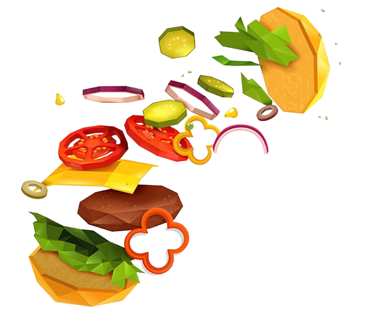

Fresh, Organic & Farm-Grown
Mushrooms in Vypin, North
Paravur & Ernakulam
At Lal Foods, we proudly deliver the best farm-fresh mushrooms across Vypin, North Paravur, Ernakulam, and all of Kerala. Grown naturally without harmful chemicals, our mushrooms are bursting with flavor, rich in nutrition, and perfect for soups, curries, salads, and gourmet dishes. From our mushroom farm to your table – always fresh, always healthy.
Delicious Mushroom Recipes Loved Across Kerala
Our fresh mushrooms add authentic Kerala flavor to every meal. Whether it’s a healthy breakfast in Vypin, a quick lunch in North Paravur, or a comforting dinner in Ernakulam, Lal Foods mushrooms make every dish wholesome, tasty, and nutritious.
Breakfast Boost
Lunch Delight
Dinner Comfort
Get the
Lal Foods App - Fresh Mushrooms Anytime in Kerala
With the upcoming Lal Foods app, you can order mushrooms easily from Vypin, North Paravur, and Ernakulam, explore local Kerala recipes, and discover mushroom health tips. Eat fresh, eat healthy, the Lal Foods way.
About Lal Foods – Kerala’s Trusted Mushroom Farmers

At Lal Foods, based in Vypin, Ernakulam, we are passionate mushroom farmers committed to quality and purity. Our mushrooms are grown naturally, free from chemicals, ensuring the authentic taste of Kerala. Packed with vitamins, plant-based protein, and antioxidants, our mushrooms support immunity, energy, and overall wellness. Families in North Paravur, Ernakulam, and beyond trust Lal Foods for the freshest mushrooms daily.
Latest News from Lal Foods – Fresh Mushrooms in Kerala
Why Mushrooms Are Kerala’s Future Superfood
Mushrooms are eco-friendly, sustainable, and a healthy meat alternative. Lal Foods brings these benefits fresh to your homes in Vypin, North Paravur, and Ernakulam.
Quick Mushroom Recipes for Busy Families in Kerala
Our chef-approved mushroom recipes are perfect for families in Ernakulam and North Paravur. Cook healthy meals in just 15 minutes with Lal Foods mushrooms.
What Kerala Customers Say About Lal Foods Mushrooms
Usha Joshy - Kuzhupilly,Vypin
“The freshest mushrooms I’ve ever had in Ernakulam! Perfect for pasta and curries. Lal Foods is now my first choice.”
Raja Gopal - Padamukal,Kakanad
“I love that Lal Foods grows mushrooms naturally in Vypin. You can taste the difference – earthy, rich, and chemical-free.”
Raja Gopal - Padamukal,Kakanad
“I love that Lal Foods grows mushrooms naturally in Vypin. You can taste the difference – earthy, rich, and chemical-free.”
Hajra Majeed - Perumpadana,North Paravur
“My family in North Paravur loves the mushroom soup and stir fry using Lal Mushrooms. Fresh and tasty every time.”
Salviyas Sojan - Cherai, Vypin
“Finally, a trusted mushroom supplier right here in Vypin! The mushrooms are chemical-free, healthy, and taste amazing in traditional Kerala curries.”
Shyam Prakash - Ezhikara, North Paroor
“I’ve tried mushrooms from many shops, but Lal Foods mushrooms are the freshest in North Paravur. They stay crisp for days and make my Kerala-style mushroom thoran perfect.”
Thomas Mathew – Aluva, Ernakulam
“I never realized mushrooms could taste this good until I tried Lal Foods. They are earthy, fresh, and perfect for both Indian and continental cooking. Best in Kerala!”
Aiswarya – Njarakkal, Vypin
"Lal Foods mushrooms are a blessing for families like ours. They are clean, fresh, and safe for kids. My children enjoy mushroom cutlets and fried rice almost every weekend."
Shyam – Azhicode, Kodungaloor
"As a fitness trainer, I recommend mushrooms for protein. Lal Foods delivers fresh mushrooms to Kodungalloor, and my clients love the healthy recipes I share using them."